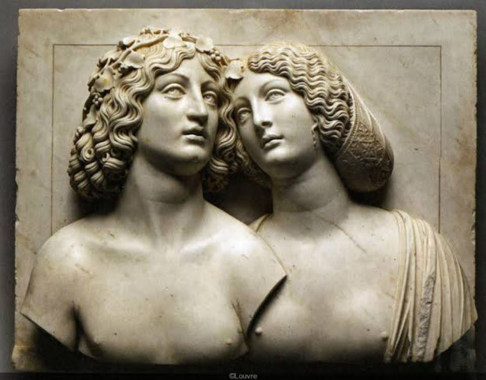

Dans la série "Les vents contraires"
N°23. Le corps et l’âme
Le corps, c’est ce costume qu’on porte
même quand il gratte,
quand il plie,
quand il hurle.
Il court, il tombe,
il se cogne aux jours.
L’âme ?
Elle regarde ça depuis l’arrière-scène.
Parfois elle applaudit,
parfois elle pleure.
Souvent, elle ne comprend pas
ce que fait le corps.
Mais sans le corps,
elle flotte.
Et sans l’âme,
il s’effondre.
On est ce mariage étrange,
fragile,
entre la poussière et la lumière..
Djamel Metref
At Yenni le 28 août 2025

← Tous les poèmes